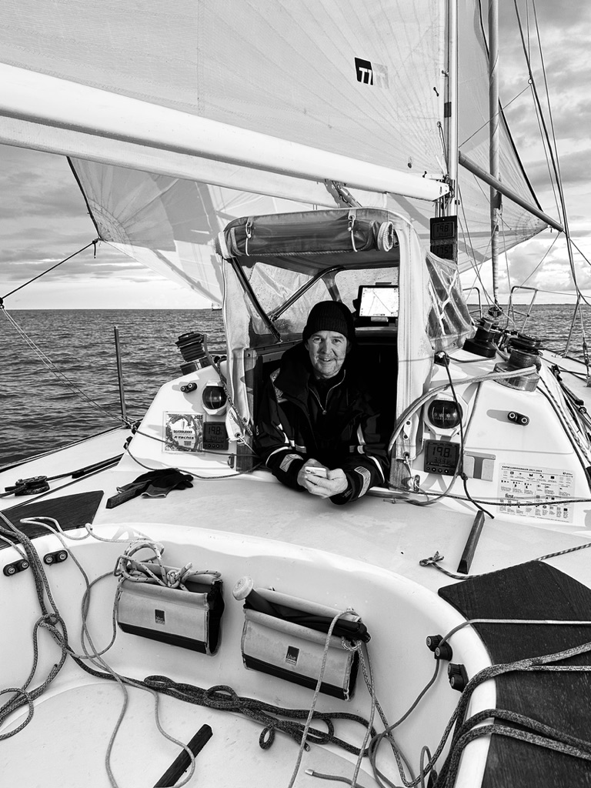

Too many opportunities
We find where a small, focused AI initiative can create the greatest effect.
AI Enablement
Context before technology.
Waltham helps owners and leaders rethink how work gets done — not by adding more software, but by using AI where it can create real business value.
Big problems. Simple words. Concrete outcomes.
AI creates value only when the technology is connected to a company’s customers, decisions, knowledge and daily workflows. That is why we do not begin with the tool. We begin with the business.
We combine decades of entrepreneurship, strategy and practical problem-solving with a deep understanding of how AI can create new business models, improve work and bring ideas to life.
That is AI Enablement: making AI concrete, useful and embedded in the way a business actually works. Waltham acts as a practical AI enabler, focused on opportunities that can be used, measured and built upon.
We find where a small, focused AI initiative can create the greatest effect.
We identify work that consumes time and build simpler systems around it.
We connect the technology to ownership, workflows and a realistic path into operation.
Choose a concrete place to begin
Choose one question, one decision or one opportunity. We agree the scope, price and deliverable in advance. Once the answer is delivered, you decide whether to continue.
You own the decision. Waltham provides clarity, a recommendation and a clear next step.
A deliverable you can take forward
You receive a visual, understandable and shareable product bringing together the analysis, evidence, recommendations and possible next steps.
“Is this opportunity worth pursuing?”
A fast, independent assessment of a property, idea, investment or business opportunity.
Before investing, management gets a clear view of Danish demand, competition, barriers and realistic routes into the market. The report recommends: stop, investigate further or proceed.
“Who is the market — and where are the best customers?”
A focused answer to one market question, helping you prioritise on a stronger basis.
A British industrial company needs to know which Danish businesses fit its product. We map and segment the market, then deliver a prioritised prospect list with practical points of entry.
“How do we make the value clear to a bank, buyer or investor?”
A decision-ready case combining evidence, economics, scenarios and narrative.
A British business needs board and bank support for Denmark as its first Nordic market. We bring market evidence, investment, risk and potential together in one understandable digital case.
“Where can AI save time or create value in practice?”
A practical review of one part of the business, without committing to a larger technology project.
A British manufacturer expects Danish enquiries and documentation requirements. We identify how AI can qualify leads, understand materials and prepare responses before a larger system is considered.
“How do we create a story the market will genuinely care about?”
We build a credible PR case around research, data or demonstrable knowledge.
We develop a research idea that creates relevant new knowledge about the Danish industry. The findings become the basis for a credible Danish media story, messages and a focused launch plan.
“We need to explain something quickly — can you make it presentable?”
A professional, mobile-ready presentation page, ready to share as one simple link.
The British company is meeting potential Danish partners. Within three working days it receives a Denmark-focused page explaining the product, its relevance and the reason to begin a conversation.
“We need a professional website now — can you put it properly in place?”
A complete, polished and mobile-ready website with a clear story, concrete services and a simple path to contact.
The business has the clients and expertise, but an outdated or missing website. We structure the story, build the site and make it ready to share and be found.
Prices exclude VAT and any external costs. Scope and fixed price are always confirmed before work begins.
Market entry · Denmark · Norway · Germany
One front door. The right specialists behind it.
Waltham investigates the market, identifies the most relevant customers and makes the route in concrete. When the assignment requires company formation, VAT, logistics, local sales channels or specialist expertise, we bring the right team together around the business.
From opportunity to application
The best start is often one limited workflow where the effect can be seen, measured and understood. Once it works in the real world, we can build further with far less risk.
The method is simple enough for a small business and robust enough for a larger organisation.
Customers, goals, knowledge, decisions and the workflows that create or constrain value.
We prioritise by impact, feasibility, risk and learning value.
An agent, a workflow or a decision tool — without unnecessary complexity.
We measure, adjust and make an informed decision about whether to scale.
AI does not make experience less valuable. AI makes experience more scalable.
One connected value chain
We can take on one focused assignment or follow an opportunity from research to delivery.
Property · investments · businesses · projects
We identify, structure and visualise hidden value in complex assets and opportunities — and make the case ready for a bank, investor, buyer or partner.
See our cases →Know the market before you make the move
We research markets, customers, competitors and opportunities using data, AI-enabled research and more than 25 years of hands-on market research experience. The objective is knowing what to do next.
From opportunity to business
We identify promising customers, applications and routes to market, then help test them in practice.
When something is stuck
We clarify goals, responsibilities, documentation and interests, and establish a simple system for decisions and progress.
Experienced, independent challenge
Ongoing, confidential sparring for owners and leaders who need honest questions, new perspectives and practical judgement.
Waltham Ventures
AI makes it possible to research, test and build focused businesses far faster than before. Waltham combines the technology with commercial judgement, market understanding and practical execution — developing both client solutions and ventures of its own.
Breadth is not the objective. The objective is to find a concrete opportunity, build the smallest credible solution and let the market decide whether it should grow.
An independent entry point for international companies seeking to explore and enter the Nordics.
A focused marketplace connecting Norwegian camping opportunities with Danish guests.
Office and facility-management brokerage from concrete need to local solution.
Find the signal. Test demand. Build what the market will actually use.
Explore Waltham Ventures →AI in the real world
Property · operations · development
Lindholm Business Center demonstrates how commercial letting, communication, digital solutions, physical improvements and everyday needs can be developed as one connected system.
The work combines tenant relations, visibility, website development and practical property operations – with the aim of creating an attractive and well-functioning environment for businesses.

Property · financing · development opportunity
A major commercial property should not be explained through floor area and comparable transactions alone. Tenants, operations, development potential, location and future uses can tell a much stronger story together.
Waltham brings documentation, scenarios, economics and visualisation into a decision-ready case that helps a bank, investor or buyer see the complete opportunity.
2000–2025 · Systems · market insight · scaling
InFact was built around an automated telephone system that made large-scale data collection faster and scalable. The company connected technology, analysis and communication through more than two decades of market and opinion research.
Visit InFact.no →Complex case · digital case room
An extensive local planning case was spread across documents, consultation responses, authority decisions, news articles and different versions of the story. This made the case difficult to understand — even for people who wanted to get involved.
We gathered the material in a digital case room with a clear timeline, themes, sources and explanations. The result is an open knowledge base that makes complex information searchable, verifiable and easier to act on.
Se BevarNyborgFjord.dk →Property · AI · rapid production
An inherited property had remained at a standstill while the family tried to choose an estate agent. In a few days, we brought together photographs, facts, documents and the history of the area in a polished digital pre-sale presentation.
The case shows how AI and a clear working method can turn scattered material into professional decision and sales material — quickly, shareably and ready for the next step.
View Åhusene 11 →Waltham Logbook
Observations, experience and ideas about business, technology, property and people — written along the way. Brief, concrete and without consultant jargon.
Continuous entries · newest firstLogbook kept since 2026
Tools
Use our simple problem clarification tool. It provides a concise starting point for a better first conversation — without registration.
Experience
Waltham was founded by Nikolai Waltham and is built on decades of entrepreneurship, market analysis, automation, digital development, property and practical problem-solving.
Around the year 2000, Waltham developed a fully automated telephone system for data collection. Technology, automation and digital solutions have remained an active part of the business ever since — they did not begin with AI.
At InFact, the work was already about turning human processes into scalable systems. Today, AI makes it possible to apply that experience far faster and in entirely new areas.
We work as a flexible core with a network of specialists, preferably in small, manageable stages where value becomes visible along the way. If it works, we build further.

«The technology is new. The question is the same: How do we make the system work smarter?»
Work with Waltham
Independent consultant, specialist or commercial problem-solver? Waltham is building a flexible network across research, technology, sales, communication and business development.
You bring what you are exceptionally good at. Waltham creates and structures the opportunities and brings the right team together around each assignment.
Contact
Send it to us. We will examine the situation, structure the possibilities and come back with what we believe the next step should be.